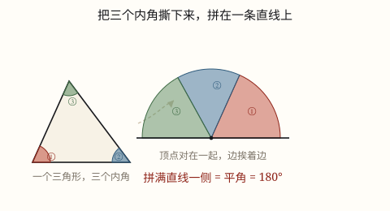
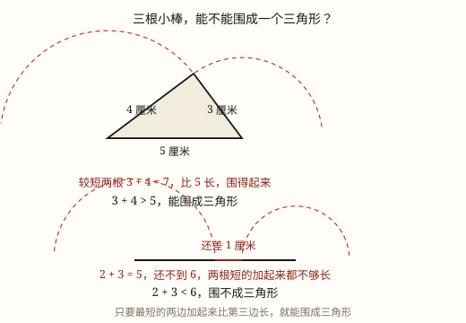
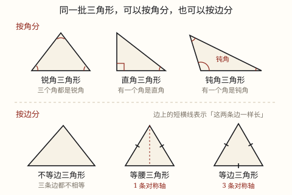

三角形的认识、内角和与三边关系
三角形由三条线段围成。按角分有锐角、直角、钝角三角形；按边分有不等边、等腰和等边三角形，等边是特殊的等腰。
| 所属主题 | 图形的认识与测量 |
|---|---|
| 所属模块 | 图形与几何 |
| 课标学段 | 第二学段（3~4年级） |
| 前置知识 | 线段、射线、直线与角的认识 |
| 核心素养 | 空间观念几何直观推理意识 |
教材定位
人民教育出版社《2024年版》
对应四下第 3 单元「三角形」：三角形的特性、稳定性与分类。；对应四下第 3 单元「三角形」：三角形的内角和是 180 度。；对应四下第 3 单元「三角形」：三角形任意两边之和大于第三边。
课标要求
| 图形与几何·图形的认识与测量 | 认识三角形和四边形，会根据图形特征对三角形和四边形进行分类。 印刷第 29 页 行为动词：理解 |
|---|---|
| 图形与几何·图形的认识与测量 | 知道三角形任意两边之和大于第三边（例32）；知道三角形内角和是180°。 印刷第 32 页 行为动词：知道 |
| 图形与几何·图形的认识与测量 | 结合生活情境认识角，知道角的大小关系；会用量角器量角，会用量角器或三角板画角。 印刷第 29 页 行为动词：掌握 |
说明
三角形由三条线段围成，有 3 条边、3 个顶点、3 个角。判断一个图形是不是三角形，就看它是不是三条边首尾相接、围成了一个封闭的图形。
按角分：三个角都是锐角的叫锐角三角形；有一个角是直角的叫直角三角形；有一个角是钝角的叫钝角三角形。注意：任何三角形至少有两个锐角，所以只要看最大的那个角是锐、直还是钝，就能一次分完，不会漏也不会重。
按边分：三条边都各不相同的叫不等边三角形；有两条边相等的叫等腰三角形（相等的两条边叫腰，第三条叫底边，两腰的夹角叫顶角）；三条边都相等的叫等边三角形（也叫正三角形）。因为「三边相等」一定满足「两边相等」，所以等边三角形是特殊的等腰三角形。
对称轴的条数要记准：一般的等腰三角形只有 1 条对称轴（从顶角到底边中点的那一条直线），等边三角形有 3 条对称轴。等腰三角形的对称轴不是 2 条。
（三角形的内角和）
三角形里面的三个角叫内角。把任意一个三角形的三个内角加起来，结果总是 180°，这叫作三角形的内角和是 180°。
这个结论对所有三角形都成立：锐角三角形、直角三角形、钝角三角形；大三角形、小三角形；画在纸上的、用钢架搭的——只要它是三角形，三个内角加起来就是 180°，一分不多、一分不少。
常用的用法是求第三个角：知道其中两个角，用 180° 减去这两个角的和就行。比如一个三角形两个角分别是 55° 和 65°，第三个角就是 180° - 55° - 65° = 60°。
（三角形的三边关系）
给三根小棒，一定能围成三角形吗？不一定。三角形有三条边，三条边之间有一条硬约束：
三角形任意两边的和大于第三边。
这句话看起来要检查三次（a+b>c、a+c>b、b+c>a），其实只需检查一次：把三条边按长短排好，只要较短的两条加起来大于最长的那条，另外两次检查自动成立。
换句话说：两根短的接起来，得够得着第三根；够不着，就围不成。
使用场景
看建筑：屋顶的人字梁、大桥和塔吊上的钢架都是三角形——三角形不像四边形那样容易变形，撑得住。
认标志：路口的「注意儿童」等警示标志常常是等边三角形的红框，三条边一样长、三个角一样大。
看身边物品：红领巾是钝角等腰三角形，两腰相等；衣架、三角警示牌也一样，先认腰再认角。
做手工和拼图：用小棒拼三角形时，先想清楚要拼等腰还是等边，再去选同样长的小棒，材料就不会拿错。
（三角形的内角和）
量角核对：做三角形纸工时，量出两个角就能算出第三个角，不用再量一次，也不会因为量不准对不上。
搭钢架：屋顶的人字梁要先定好两个斜面的夹角，第三个角靠内角和推出来，下料才不会差。
看三角板：一块三角板的三个角是 30°、60°、90°，另一块是 45°、45°、90°，加起来都是 180°——你天天用的工具就是活教材。
解释分类：为什么一个三角形里不可能有两个直角？因为两个直角已经 180°，第三个角就没地方站了。
（三角形的三边关系）
搭架子：用三根木条钉三角形支架，选料前先量一量，短的两根加起来够不够第三根。
走捷径：从 A 到 B，绕道 C 一定比直着走远——这就是两边之和大于第三边在生活中的样子。
装修下料：要做一个三角形的置物架，三块板的长度不能随便定。
操场划线：画三角形跑道区域时，三条边的长度要先算好。
注意点
分类要先定标准：说「这是什么三角形」之前，先问自己是按角分还是按边分。一个三角形可以同时是直角三角形和等腰三角形（等腰直角三角形）。
按角分只看最大的角：一个三角形里有锐角不等于它是锐角三角形，必须三个角都是锐角才行。
对称轴条数别记错：等腰三角形 1 条，等边三角形 3 条。等腰三角形的对称轴是穿过顶角和底边中点的那一条直线，不是两条腰各一条。
等边也是等腰：分类时把等边三角形归进等腰三角形那一类，不算错；但说「等边不是等腰」就错了。
（三角形的内角和）
内角和与三角形的大小无关。把三角形画大一倍，三个角张开的大小一点没变，和还是 180°。
量出来的结果常有误差。用量角器量三个角再加，可能得到 179° 或 181°，那是量角的误差，不是结论不对——所以才要用撕角拼角的方法再确认一次。
求第三个角要减掉两个角的和，不是只减一个。180° - 55° - 65° 和 180° - (55° + 65°) 是一回事，别漏减。
直角三角形里两个锐角的和是 90°，可以直接用 90° 去减，不必绕到 180°。
（三角形的三边关系）
必须检查「较短两边之和」，不是随便挑两条。用最长的加其中一条去比，永远成立，等于没检查。
等于也不行。「大于」是严格大于，恰好相等时三条边会摊成一条直线，围不成三角形。
判断能否围成，只需算一次：最短 + 次短 > 最长。这一条成立就够了。
已知两边求第三边的范围：第三边必须大于两边之差、小于两边之和。两边是 3 和 5，第三边在 2 到 8 之间（不含 2 和 8）。

图 1：把三个内角撕下来拼在一起，正好铺满直线的一侧——这就是 180°

图 1：短的两根够不够得着，决定了围不围得成
为什么是这样

图 1：同一批三角形，按角分是一种结果，按边分又是另一种结果，两种分法互不排斥
算理推导
为什么按角分只要看最大的角：三角形里最多只有一个直角或一个钝角（这一点后面学内角和时会明白：三个角加起来是 180°，两个直角就已经占满 180°）。所以「有没有直角」「有没有钝角」只要扫一眼就能定下来，剩下的就是三个角全锐的情况。
为什么按边分只有三类：三条边的长度关系只有三种可能——三边都不等、恰有两边相等、三边全相等。这三种情况互不重叠，又刚好把所有的三角形都装进去。
为什么等边是特殊的等腰：等腰的定义是「至少两条边相等」，等边三角形三条边都相等，当然满足这个条件，所以它是等腰三角形里最特殊的一种——三条边对称，因此普通等腰的 1 条对称轴也增加到 3 条。
（三角形的内角和）
撕角拼一拼：在纸上画一个三角形，把三个角沿着边剪（撕）下来，不要剪坏角本身。把三个角的顶点对在一起、边挨着边，摆到一条直线上——你会发现三个角正好把直线的一侧铺满，一点都不重叠、不留缝。直线的一侧是平角，也就是 180°，所以三个内角的和就是 180°（图 1）。
换三角形再试：换一个很尖的锐角三角形、一个带直角的、一个很扁的钝角三角形，各撕一次、各拼一次，三次都拼成平角。形状变了，三个角各自的大小变了，但「合起来铺满一条直线」这件事没变——所以 180° 不是某一个三角形的巧合。
折角也能看到同一件事：不撕纸，把顶角沿一条平行于底边的折痕向下折，再把两个底角分别向中间折过去，三个角的顶点会碰在一起，三个角拼成的正好也是一条直线。撕和折，两种做法得到同一个平角。
为什么这件事有用：既然三个角合起来是固定的 180°，那么三个角里只要知道两个，第三个就被定死了——不需要再量。三角形「三个角互相牵制」的这种关系，是后面算角度、搭架子、判断能不能拼成三角形的基础。
（三角形的三边关系）
拿三根小棒试试：3 厘米、4 厘米、5 厘米。短的接起来 3+4=7，比 5 长，能围成。
再试：2 厘米、3 厘米、6 厘米。短的接起来 2+3=5，比 6 短，围不成——两根短的就算拉成一条直线也够不到第三根的两端。
为什么会这样？因为三角形是三条线段首尾相接围成的封闭图形。要把三条边接成一个圈，最短路径的那两条必须能「跨过」第三条。
换个角度想：如果两边之和等于第三边，那两条边拉直以后正好落在第三边上，三条线段共线，围出来的是一条线段而不是三角形。
那为什么检查一次就够了？把三边排成 a ≤ b ≤ c。因为 c 最大，所以 a+c > b 和 b+c > a 一定成立（最大边加任何一条都大于剩下那条）。真正可能出问题的只有 a+b>c 这一条。
于是得到已知两边求第三边的做法：第三边必须同时满足「比两边之差大」和「比两边之和小」。两边是 3 和 5，第三边在 5-3=2 与 5+3=8 之间。
动手实验
剪一批三角形：拿剪刀和纸，随便剪出 6~8 个形状不同的三角形，先量角按角分装进三个袋子（锐角、直角、钝角），再量边按边分装进三个袋子（不等边、等腰、等边）。把你分好的结果摆成图 1 那样的表格，看看哪些格子里有图形、哪些格子里是空的（比如「等边但直角」的格子一定是空的）。 （三角形的内角和） 每人准备三张纸，各画一个不同的三角形（一个很尖、一个带直角、一个很扁），用彩笔把三个角涂成红、蓝、绿。剪下三个角，在桌面上沿一把直尺的边拼：红角靠左、蓝角居中、绿角靠右，顶点都贴着直尺。三个角是不是刚好铺满直尺上方？再拿量角器量一量拼出来的角，读数是不是接近 180°？最后把三个角换回原三角形，看看能不能拼回去。 （三角形的三边关系） 准备一批小棒（或用纸条剪成 2、3、4、5、6、7、10 厘米各若干根）。两人一组，一人任意抽三根，另一人先猜能不能围成，再动手摆验证。把结果记成一张表：能的画勾，不能的画叉。摆上十几组之后，你会发现划叉的那些都有一个共同点——两根短的加起来小于等于最长的那根。这张表就是你亲手做的「三边关系」。
按场景的例题
例 1（场景：购物消费） 认一认红领巾
一条红领巾的两条腰都是 60 厘米，底边是 100 厘米，它按边分是什么三角形？按角分呢？
解：两条边相等（都是 60 厘米），按边分是等腰三角形；红领巾顶角那一处张开得很大，是一个钝角，按角分是钝角三角形。
答：按边分是等腰三角形，按角分是钝角三角形；完整地说，它是等腰钝角三角形。
例 2（场景：行程出行） 路口的警示标志
一个「注意儿童」警示标志是等边三角形，量得周长是 27 分米，它的边长是多少分米？
解：等边三角形三边相等：\text边长 = \text周长 ÷ 3 = 27 ÷ 3 = 9。
答：每条边都是 9 分米。
例 3（场景：绿化照明） 路灯的斜撑支架
路灯杆上有一根斜撑，和灯杆、横臂围成了一个直角三角形。已知灯杆与横臂垂直，斜撑与横臂的夹角是 35°，这个三角形按角分属于哪一类？
解：灯杆与横臂垂直，说明有一个角是直角，按角分就是直角三角形，不用管另一个锐角是多少度——它一定是 90° − 35° = 55°。
答：它是直角三角形。
例 4（场景：工程建造） 给屋顶的人字梁选料
工人师傅要做一个等腰三角形的人字梁，底边长 6 米，两腰各长 5 米。一共需要多少米的木料？这个三角形有几条对称轴？
解：木料长度就是周长：5 × 2 + 6 = 16 米。等腰三角形的对称轴是从顶角到底边中点的一条直线，共 1 条。
答：需要 16 米木料；这个等腰三角形有 1 条对称轴。
例 5（场景：农业生产） 红领巾的两个底角
红领巾是等腰三角形，它的顶角是 120°，两个底角各是多少度？
解：等腰三角形两个底角相等。先求两个底角的和：180° - 120° = 60°；再平分：60° ÷ 2 = 30°。
答：每个底角都是 30°。
例 6（场景：物流运输） 屋顶桁架的三角形钢架
一个三角形钢架的两个角分别是 55° 和 65°，第三个角是多少度？它是什么三角形？
解：180° - 55° - 65° = 60°。三个角 55°、65°、60° 都是锐角。
答：第三个角是 60°，这是锐角三角形。
例 7（场景：校园生活） 路灯的斜撑支架
路灯的斜撑和灯杆、横臂围成一个直角三角形，斜撑与横臂的夹角是 35°，斜撑与灯杆的夹角是多少度？
解：直角三角形里两个锐角的和是 90°：90° - 35° = 55°。也可以走全程：180° - 90° - 35° = 55°。
答：是 55°。
例 8（场景：家庭与年龄） 一副三角板
一副三角板有两块，一块的三个角是 30°、60°、90°，另一块是 45°、45°、90°。分别算一算它们的内角和，你发现了什么？
解：30° + 60° + 90° = 180°；45° + 45° + 90° = 180°。两块三角板形状不同，内角和都是 180°。
答：两块三角板的内角和都是 180°，和内角和结论一致。
例 9（场景：计量与估算） 用三根木条钉一个三角形支架
现有三根木条，长度分别是 5 分米、7 分米、13 分米，能围成三角形吗？
解：较短两边 5+7=12，小于最长的 13。两根短的接起来够不到第三根，围不成。
答：不能围成三角形。
例 10（场景：上学日常） 判断上学路线
从家到学校有一条直路长 800 米，也可以先走到书店再到学校，两段分别是 350 米和 500 米。哪条路近？
解：绕道路程 350+500=850 米，直路 800 米。850>800，符合两边之和大于第三边。
答：直路近，800 米。
例 11（场景：饮食与配比） 给三角形花坛选围栏长度
一个三角形花坛，两边分别是 6 米和 9 米，第三边可以是多少米？（取整米数）
解：第三边要大于 9-6=3，小于 9+6=15。取整米数就是 4 到 14 米。
答：第三边可以是 4 米到 14 米之间的任意整米数。
例 12（场景：金融理财） 判断小棒能否围成
三根小棒长 4 厘米、4 厘米、8 厘米，有人说「4+4=8，正好相等，应该能围成一个扁扁的三角形」，对吗？
解：不对。相等时两条边拉直后正好落在第三条上，三条线段共线，围出来的是一条线段。必须是严格大于。
答：不能围成，必须是「大于」而不是「等于」。
常用推论
按角分：三个角都是锐角 → 锐角三角形；有一个直角 → 直角三角形；有一个钝角 → 钝角三角形。任何三角形至少有两个锐角。
按边分：三边互不相等 → 不等边三角形；两边相等 → 等腰三角形；三边都相等 → 等边三角形。等边三角形是特殊的等腰三角形。
等边三角形的周长：C = 3a，反过来 \text边长 = \text周长 ÷ 3。
对称轴的条数：一般等腰三角形 1 条，等边三角形 3 条，不等边三角形没有对称轴。
已知两个角求第三个角：\text第三个角 = 180° - \text两个角的和。
直角三角形中两个锐角的和是 90°：一个锐角 = 90° - 另一个锐角。
等边三角形三个角相等，每个角都是 180° ÷ 3 = 60°。
一个三角形里最多只有一个直角或一个钝角，因为两个直角或两个钝角加起来就已经不小于 180° 了。
只需检查一次：把三边排序为 a ≤ b ≤ c，只验 a+b>c 即可。
已知两边求第三边范围：|a-b| < \text第三边 < a+b。
三角形最稳固：三条边一旦确定，形状和大小就完全定死，推不动、拉不变形——这也是木架、自行车架爱用三角形的原因。
等腰三角形的特殊情形：两腰之和必须大于底边，所以腰长必须大于底边的一半。
易错点
错认为「等腰三角形有 2 条对称轴，两条腰各一条」。
为什么错把「有两条相等的边」错当成了「有两条对称轴」。对称轴是一条直线，沿它折过去图形要完全重合；一般的等腰三角形只有穿过顶角和底边中点的那一条。
正确一般等腰三角形 1 条对称轴；三条边都相等的等边三角形才有 3 条对称轴。
错看到三角形里有一个锐角，就把它叫做锐角三角形。
为什么错任何三角形都至少有两个锐角，所以「有锐角」根本不能作为判断标准。
正确要看最大的那个角：三个角全是锐角才是锐角三角形；有一个直角或钝角就分别是直角、钝角三角形。
错把等边三角形和等腰三角形并列成两类，说「这个三角形是等边三角形，所以不是等腰三角形」。
为什么错三边相等必然满足「有两条边相等」，等边本来就是等腰的一种。
正确等边三角形是特殊的等腰三角形，可以写进等腰那一类里。
错认为「大三角形的内角和比小三角形的大」。
为什么错把「边变长了」当成了「角变大了」。角张开的大小与边的长短无关，三角形画得再大，三个角还是那三个角。
正确任何三角形的内角和都是 180°，与大小、形状无关。
错直角三角形中一个锐角是 35°，另一个锐角算成 180° - 35° = 145°。
为什么错只减了一个角，忘了这个三角形里还有一个 90° 的直角占着位置。
正确180° - 90° - 35° = 55°，或直接用 90° - 35° = 55°。
错量出三个角是 60°、59°、62°，加起来 181°，就说「内角和不是 180°」。
为什么错量角器有读数误差，量角时顶点没对准、边没对齐都会差一两度，误差不能推翻结论。
正确用撕角拼平角的方法再确认一次：三个角拼起来正好是一条直线，说明 180° 成立，差的那 1° 是量出来的误差。
错用最长的边加一条边去比：13+7>5，所以能围成。
为什么错最长边加任何一条边一定大于剩下那条，这次检查永远成立，等于没检查。
正确必须检查较短两边之和：5+7=12<13，不能围成。
错认为 4、4、8 能围成一个「很扁的三角形」。
为什么错等于的时候三条边共线，图形退化成一条线段，不是三角形。条件是严格大于。
正确4+4=8 等于第三边，不能围成三角形。
错已知两边 6 和 9，认为第三边可以是 3 米或 15 米。
为什么错边界值取不到。第三边必须严格大于 3、严格小于 15。
正确第三边在 3 米与 15 米之间，不含 3 和 15。
错只检查一组两边之和，就算判断完成。
为什么错虽然实际只需检查「较短两边之和」，但必须确认自己挑的确实是较短的两条，不能随便挑。
正确先把三边按长短排序，再算最短 + 次短是否大于最长。
直观理解
分类就像整理书包：同一批东西，按「科目」分是一种结果，按「大小」分又是另一种结果，两种分法可以同时成立。三角形的按角分、按边分也一样——先说清楚你按什么分，答案就唯一了。 （三角形的内角和） 三个内角像三个小伙伴分一张「平角大饼」：不管三角形长得胖还是瘦、大还是小，三个人怎么分，合起来永远是一整张饼的一半（180°）。谁多占一点，另外两个就自动少一点，总量永远是那么多。 （三角形的三边关系） 把三条边想成三个人手拉手围成一圈。最矮的两个人把手伸直，如果加起来还够不到最高的那个人的两只手，这一圈就合不拢。够得着，圈就成了。而最高的那个人跟谁牵都牵得到，所以真正要担心的只有最矮那两个。
三个角里挑最大的，锐角直角钝角分；两边相等叫等腰，三边相等叫等边；等腰对称只一条，等边对称整三条。 （三角形的内角和） 三个角，一条心，拼成平角不留缝；不争大小不争形，内角和总是一百八。 （三角形的三边关系） 三根小棒围三角，短的两根先加好。和比长边还要大，围得成才算拉牢。等于不行只取大，两边之差也要超。